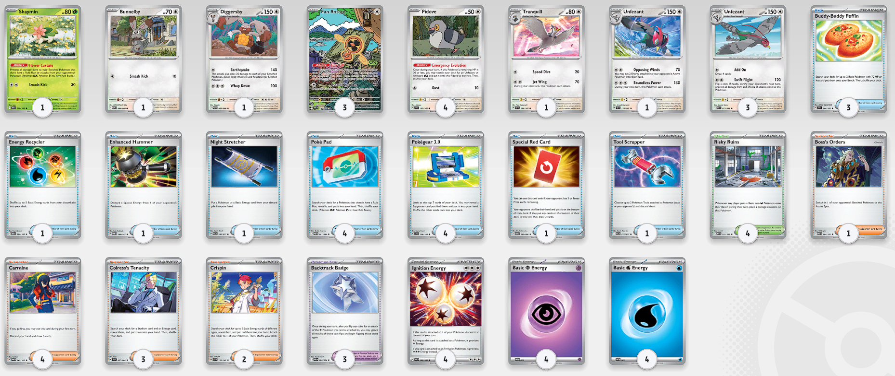

The Unforgiving Unfezant
by Rodgruff

Overview
Unfezant is a straightforward deck built around getting multiple Unfezant into play, powering them up quickly, and relying on coin flips to stay in control of the game.
Game Plan
Your first priority is to avoid starting with Pidove if possible. Pokémon like Fan Rotom, Tatsugiri, Shaymin, and Bunnelby help you set up while keeping Pidove off the field until you're ready.
Before benching Pidove, try to get Risky Ruins into play. Its damage counters reduce Pidove to 30 HP, allowing its Ability to immediately evolve into Unfezant. If needed, Bunnelby and Diggersby can also serve as solid backup attackers while helping damage your Bench.
Once your Unfezant are in play, use Crispin or Ignition Energy to power them up. Backtrack Badge gives you a second chance at your coin flip, improving your odds of protecting your Active Unfezant. There is also an alternate Unfezant build that trades some consistency for higher damage and Energy disruption.
Strengths
- Simple and easy to learn.
- Fast setup with multiple ways to get Unfezant into play.
- Coin flip mechanics can create frustrating turns for your opponent.
Weaknesses
- The primary attacker only deals 120 damage.
- Damaging your own Pidove leaves Unfezant with less HP.
- The deck relies heavily on favorable coin flips.
Final Thoughts
If you enjoy fast, straightforward decks with a bit of luck involved, Unfezant is a great choice. Just remember—the coin always has the final say.